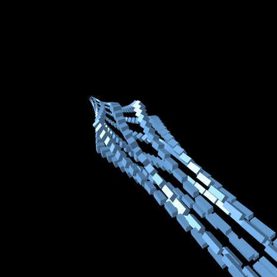
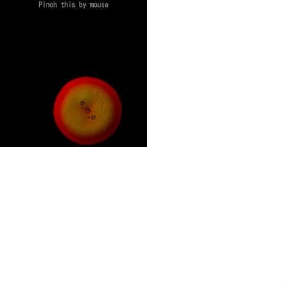
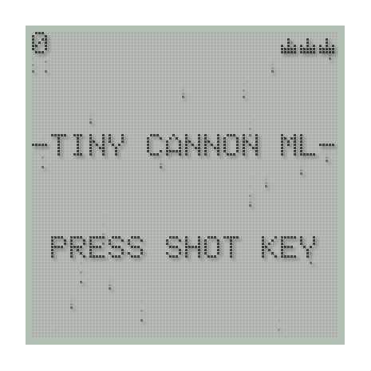
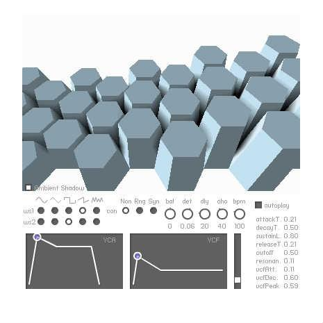
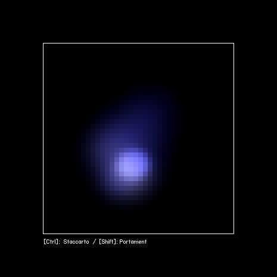
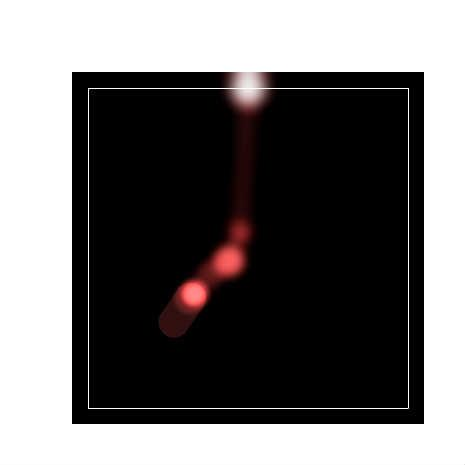
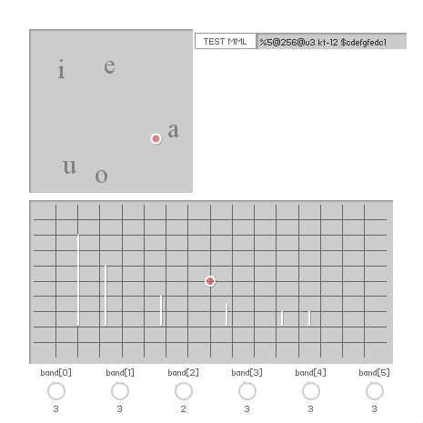
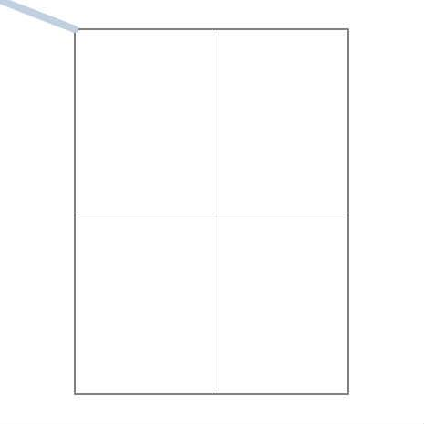
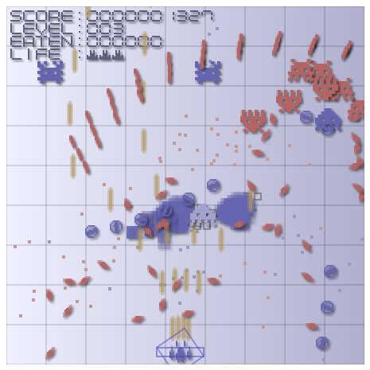
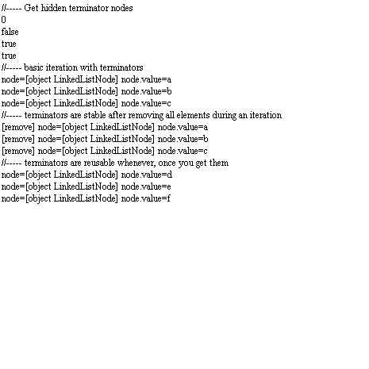

My Flash works
All
Game
Sound
3D
Misc
>25
>50
>100
>150
SiON related
SiON softsynth library for ActionScript3
AS3 API Reference
MML Reference (EN)
MML Reference (JP)
SiON MML Editor
●
2008/12/18
38
20
●
2008/12/18
38
20
((♪))
2008/12/19
58
13
音楽を付けざるを得ない_from_from_Ground
2008/12/20
5
2
wonderflで音楽♪SandStorm+うろおぼえVicViper_from_from_なんとかディウス
2008/12/25
13
11
wonderflで音楽♪カニテーマ_from_蟹さん_from_from_なんとかディウス
2008/12/25
10
30
TinySiOPM_MML_workbench
2008/12/29
15
3
forked_from_Vector3Dは要素毎に加算すると異様に早い（かも）
2009/01/06
1
0
wonderflで3D_【Flat_shading】
2009/01/10
25
12
wonderflで3D_【Flat_shading】_高速化
2009/01/10
9
3
wonderflで3D_【Phong_shading】
2009/01/10
19
5
ABC_ground
2009/01/16
20
4
Base64_3D_model
2009/01/18
7
2
ABC_flyer
2009/02/06
152
50
wonderflで音楽♪Final_TakeOff_from_ABC_flyer
2009/02/06
25
3
Arena_Shooting_in_100_Lines
2009/02/09
36
10
wonderflで音楽♪Like_the_wind_from_UpDownRoad
2009/02/17
13
2
wonderflで音楽♪SpaceHarrior+ショット+着地_from_from_Ground
2009/02/17
14
4
Ambient_Occlusion_Rendering
2009/02/18
17
9
Real_time_ambient_occlusion
2009/03/11
56
9
Regular_Solid_Structures
2009/03/17
39
2

Code_based_Structure_Synth
2009/03/19
13
3
Depth_buffer_test
2009/03/24
37
3

(((oﾟωﾟo)))
2009/05/14
51
13
Screen_Space_Ambient_Occlusion
2009/05/14
67
20
Old-skool_LCD_rendering
2009/05/21
74
9

shmups_on_LCD
2009/05/21
212
55
Dive_into_Cyberspace_forked_from_fladdict_challenge_for_professionals
2009/07/09
135
21
forked_from_fladdict_challenge_for_professionals
2009/07/09
20
5
Simple_keyboard
2009/08/19
27
11
Super_Mario_Synthesizer_(Data_not_completed)
2009/08/25
103
18
Smoky_text_forked_from_adobe_challenge_1
2009/09/08
41
6
PuyoDot_with_lighting
2009/09/12
37
6
SiON_Tenorion
2009/10/02
130
57
flash_on_2009-11-12
2009/11/24
6
1
The_ABC_song_in_your_voice_(SiON_PCM_module_+_FP10.1_microphone)
2009/11/25
22
8
意味が分からないw (ﾟдﾟ)
2009/11/27
57
8
クラリネットメソッド
2009/12/04
7
3
draw()_と_threshold()_を用いたボロノイ図の生成
2009/12/12
19
3
【ブラクラ注意】forked_from_draw()_と_threshold()_を用いたボロノイ図の生成
2009/12/13
4
2
draw()_と_threshold()_を用いたボロノイ図の生成の高速化(と新editorお試し)
2009/12/15
18
2
こするげーむ_forked_from_こするボタン
2009/12/20
8
8
shumps_with_SiON_forked_from_shmups_on_LCD
2009/12/22
53
3
Simple_spectrum_analyzer_(SiON_FFT_module_+_FP10.1_microphone)
2010/01/08
18
15
forked_from_Perfect_Shuffle_Visualization
2010/01/09
27
2
MIDIシーケンスを演奏してみた
2010/01/11
33
6
Slot_Machine_Rendering_f.f._朝青龍ゲーム
2010/02/05
17
9
Frocessing3D_あそび
2010/03/02
12
1
forked_from_SiON_setSamplerSound_setPCMSound
2010/03/06
7
7
FlashTextEngine_の真価_f.f._FTE（FlashTextEngine）を使ってみる_on_2010-1-29
2010/03/11
27
10
forked_from_action_demo_+_type_demo
2010/04/18
20
1
SiON_TETRISizer
2010/05/15
155
37
forked_from_カオスバージョン_forked_from_あなたのイベントハンドラを教えて！
2010/06/04
14
0
手打ち圧縮_ff_カオス_ff_あなたのイベントハンドラを教えて！
2010/06/04
6
0
Real_Time_Ray_Tracing
2010/06/11
134
16
JSiON.swf
2010/06/23
4
1
SiON_MML_Edtor_2_
2010/07/01
27
3
The_simplest_sample_for_SiON_v0.60_s_SoundObject
2010/07/01
4
7
Puppyish_Pentatonicism
2010/07/03
166
38
Click_me,_if_you_can
2010/10/01
91
25
Bound_Ball_Synthesizer_2
2010/10/15
139
24
DrumMachine_pattern_and_voice_selector
2010/10/15
72
5
Active_Sonar_Sequencer
2010/10/27
112
35

にょきにょきシンセサイザー(Hex-cylindrical_arpeggiator)
2010/10/31
70
7

SiON_Kaoscillator
2011/01/14
95
24

SiON_Kaospad
2011/01/14
73
24

Formant_Workbench
2011/01/25
18
0
Movie_data_in_one_PNG_image
2011/04/08
115
9

Palm_Graffiti_Pad
2011/04/09
11
1
Palm_Graffiti_Alphabet_Ripper
2011/04/11
8
1
ひらがなリッパー(Hiragana_ripper)
2011/04/11
40
1
Clear_Water_with_refraction_rendering_forked_from_3D水面_Water_3D
2011/04/13
160
27
forked_from_How_to_give_slide_effect_in_guitar
2011/04/18
0
0
Self_Shadow
2011/04/22
70
8
SiON_Physical_Modeling_Guitar_Synthesizer
2011/04/28
42
13
Beat_sort
2011/05/21
9
1
192_letters_-_forked_from_BrainF_ck_interpreter_challenge
2011/06/03
1
1
BrainF_ck_interpreter_challenge
2011/06/03
7
5
BulletRunner_Sample
2011/08/10
38
13
How_to_use_CannonML_
2011/08/10
4
4
convert_ByteArray_to_PNG_image
2011/08/13
12
4
Clear_Water_with_caustics
2011/08/27
38
3

Nomltest_on_Flash
2011/09/27
106
17
Wonderfl_user_information_analyzer_(YAWA_test)
2011/10/01
4
0
Explosion_Rendering_(SWF素材)
2011/10/05
136
30
Clear_Water_with_caustics_[Stage3D_version]
2011/10/25
38
10
Clear_Water_[Stage3D_version]
2011/10/25
42
25
Metallic_soft_cube
2011/10/31
74
7
Extended_ColorChooser_(SWF素材)
2011/11/10
71
11
Minimal_Gradient_Editor_(SWF素材)
2011/11/10
15
2
Point_Sprite_Particle
2011/11/10
48
10
Spirographical_Ingot_Cast
2011/11/11
61
5
Boolean_Crystal
2011/11/23
66
10
4k_fly-through
2011/12/01
96
9
YAWA_-_Yet_Another_Wonderfl_API_v0.16_(SWF素材)
2011/12/28
22
3

隠しメンバ「terminator」を使う。from_mx.utls.LinkedListの使い方が分からない
2012/02/16
4
0
Wave_Shape_Editor
2012/07/18
25
3
SiON_MIDI_Player
2012/08/22
17
10
GIMMICK_-_FANTAISIE_IMPROMPTU_-
2012/09/04
81
11
SiON_FM_Synthesizer_WF-1
2012/09/25
134
44
keim_challenge_lv.10
2013/03/19
4
3
SiON_SoundObject_Quartet
2015/09/26
260
66
Wonderf_Score_素材_+
2015/10/08
11
0

)/thumbnail.jpg)


/thumbnail.jpg)


/thumbnail.jpg)
/thumbnail.jpg)

_と_threshold()_を用いたボロノイ図の生成/thumbnail.jpg)
_と_threshold()_を用いたボロノイ図の生成/thumbnail.jpg)
_と_threshold()_を用いたボロノイ図の生成の高速化(と新editorお試し)/thumbnail.jpg)


/thumbnail.jpg)


/thumbnail.jpg)


/thumbnail.jpg)
/thumbnail.jpg)


/thumbnail.jpg)
/thumbnail.jpg)


/thumbnail.jpg)